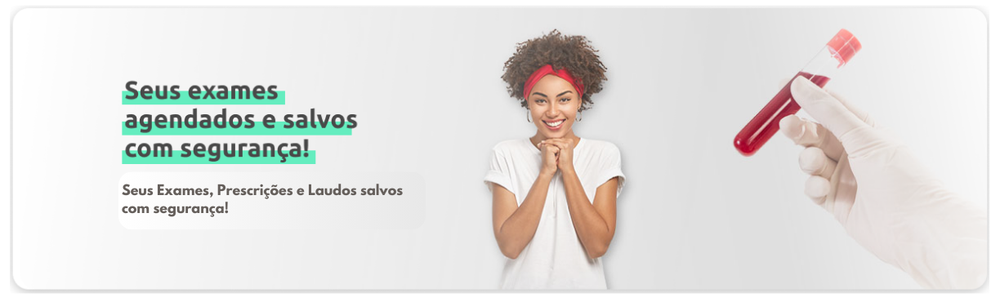

Seu prontuário em um clique
Nunca ficou tão fácil organizar seu prontuário médico digital em um só lugar! Com o Premaap você tem acesso a todo seu historico de consultas e não precisa se preocupar mais em passar as mesmas informações do seu prontuário ou diagnóstico toda vez que for à clínica.
Confira nossos artigos
Prontuário online: Entenda como é e como funciona
Com o avanço da tecnologia na área da saúde, redes públicas e particulares estão aderindo ao novo...
Ler maisDocumento online abre novas possibilidades para a área da saúde
O avanço da tecnologia na área da saúde está revolucionando a maneira como os profissionais de saúde e pacientes interagem e compartilham...
Ler mais
© Copyright – Todos os Direitos Reservados – Premaap - 2023